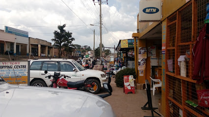
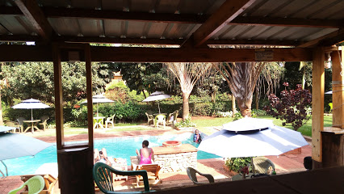

Gallery
Ibanda
Divine Providence Health Club
Kids World

Ibanda is a town in the Western Region of Uganda. It is the main political, administrative, and commercial centre of Ibanda District and the site of the district headquarters.
It started wayback in 1990s and was elevated from a trading centre to a town board,
town council and in 2016 it was granted a Municipality status.
The Municipal Council has three Divisions of Kagongo,
Bisheshe and Bufunda with 21 wards of Kyaruhanga,
Bufunda, Nyamirima, Nsasi, Kayenje, Kashangura, Rwenshuri, Kigarama, Rugazi,
Rwobuzizi, Kakatsi, Bugarama, Karangara, Kabaare, Kanyansheko,
Nyakatookye, Kyeikucu, Kikoni, Kagongo,Ruyonza and Katongore ward.
Ibanda Municipal Council has over 230 villages.
Ibanda Municipal council commenced its operations on 1 July 2016 after being
elevated from a Town Council and other sub counties that were annexed to.
(Bisheshe Sub County, Nsasi, Part of Nyabuhikye Sub County and Kashangura).
Kids World Water Park is a one of a kind children's water park located in Uganda, at the renowned Quality Shopping Village,
along Naalya-Namugongo road.
Kids World Water Park is a one of a kind children's water park located in Uganda,
at the renowned Quality Shopping Village,
Namugongo along Naalya-Namugongo road.
Our water park is open over the weekend and on public holidays from 10.00am to 6.00pm.
We open during the week for group packages such as school trips,
birthdays and other events alike. Contact us on (+256)-778-385858 for more information.
Our entrance fee is 30,000shs per child and each adult also pays the same.
Please note that we have a family package (the more the merrier) where for every 3 children,
1 adult enters free and for every 5 children, 2 adults enter free.
With this entrance fee, each customer is provided with a fun and secure experience like no other
by allowing them to enjoy the various water area activities,
swimming pool and "out-of-water" activities like several types of slides,
swings, bouncy castles, trampolines, etc.
Feel free to contact us on (+256)-778-385858 or via this page for any inquiries.
You can also follow us on Twitter and Instagram @kidworld256 for more updates from Kids World Water Park.
Health Club Facilities; We have a fully equipped gym,Massage Parlor Sauna/ Steam,Aerobics,Squash,Swimming Pool and NOW Zumba Fitness. Health Club Facilities - Aerobics,
Gym,Sauna and Steam Bath, Massage,Squash,Swimming pool,Bar and Restaurant
Stay Fit even in lock down.
#Stay safe
#Stay Home
[07/26/19] Hello there,
Please come join us every Saturday for a fun free workout session from 8am
to 9am ,Buffet @20,000shs from 1pm to 3pm